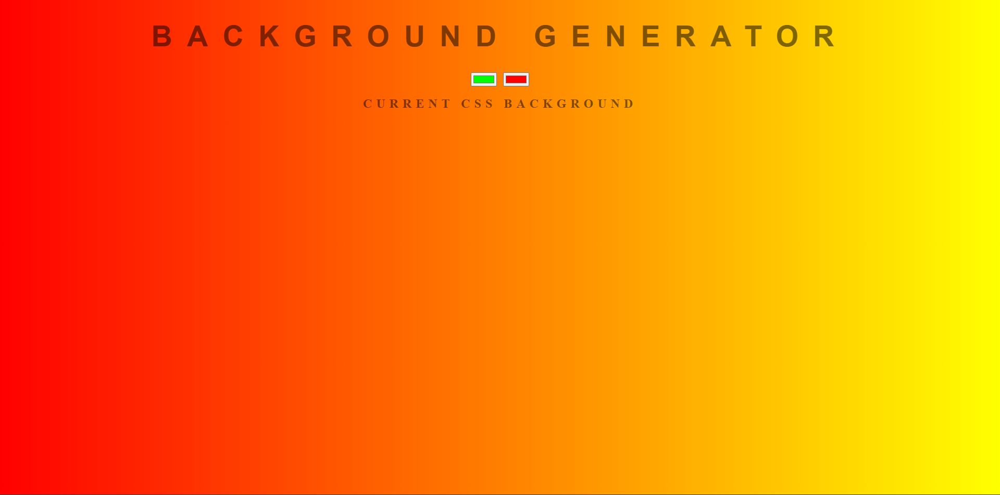
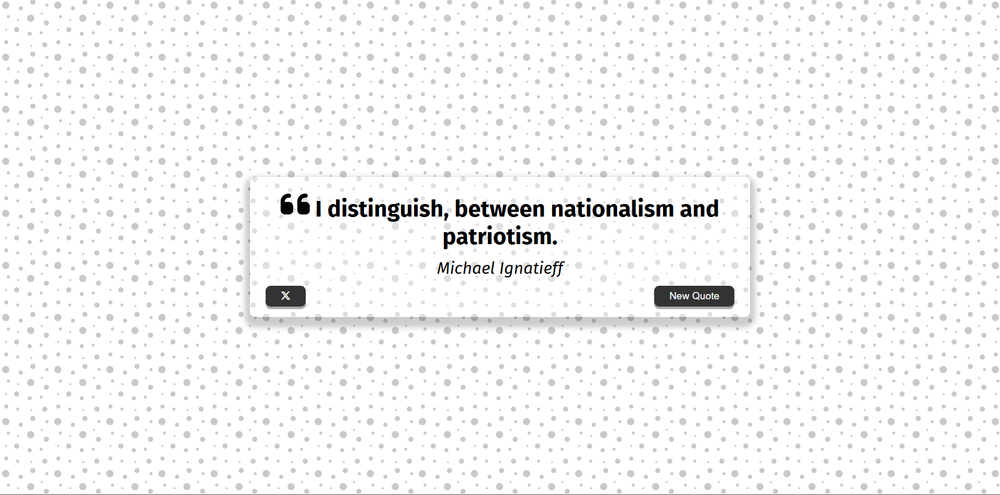
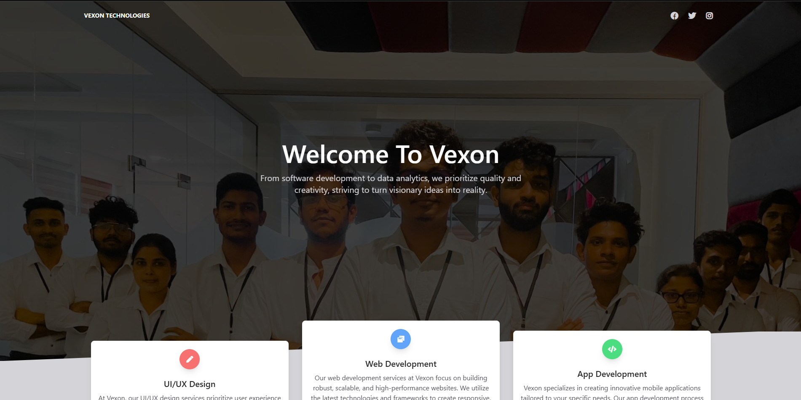
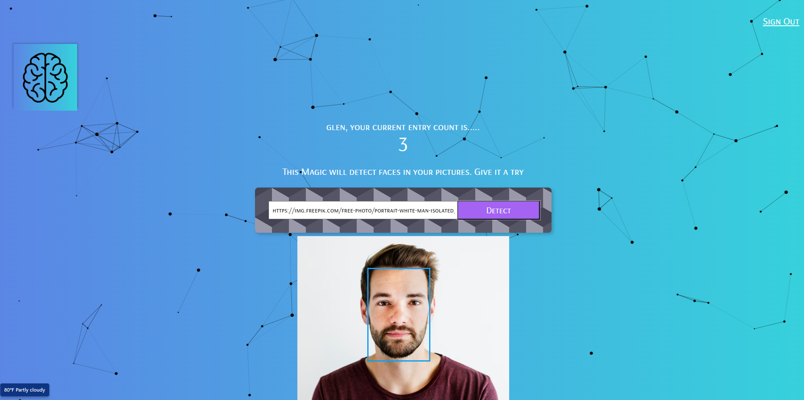
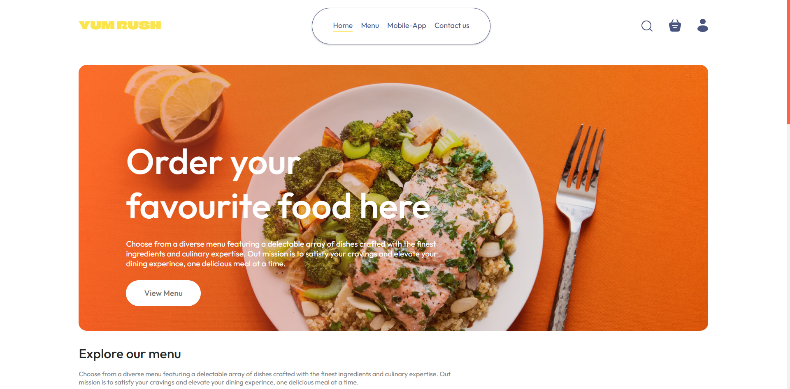
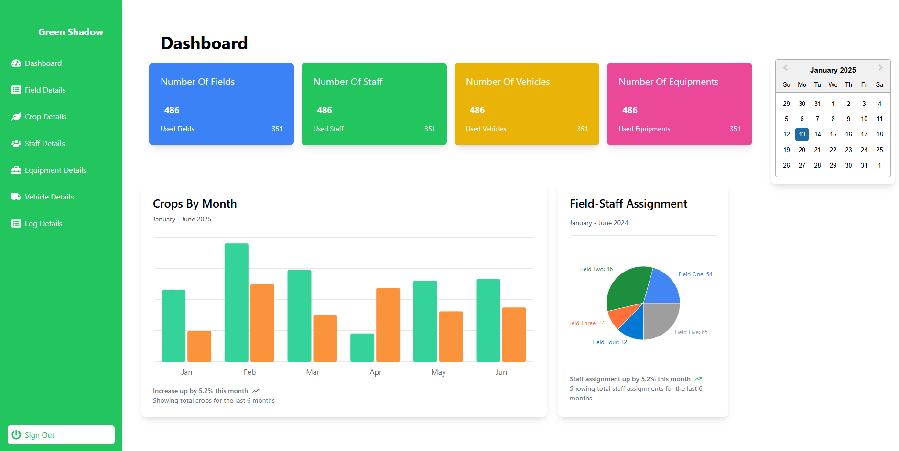
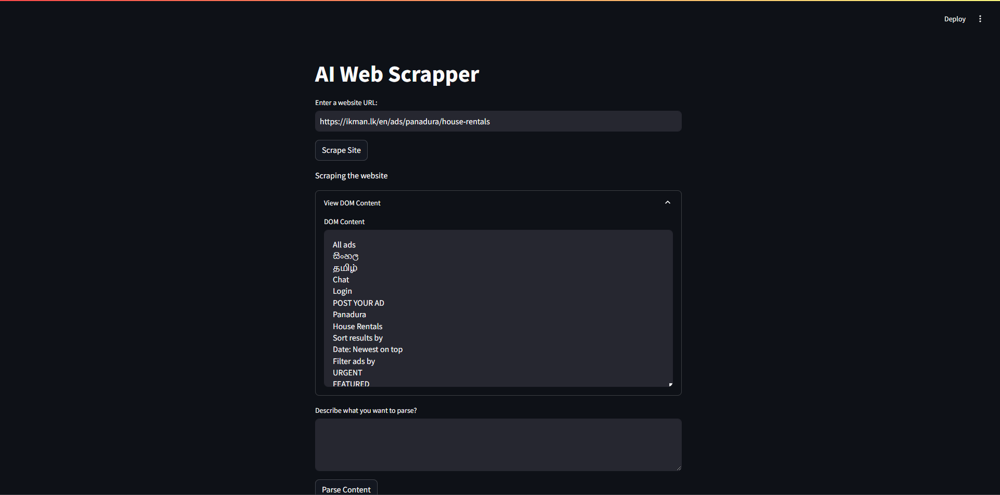

A Full-Stack Developer
Drive in to discover how i can bring your ideas to life and elevate your digital presence. Welcome to a world of endless possibilities in software development.

– About Me
Who is GLEN ALLOY?
As a passionate full-stack engineer, I specialize in developing dynamic and scalable web applications that provide seamless user experiences. With expertise in both front-end and back-end technologies, I enjoy tackling complex challenges and delivering innovative solutions. I’m proficient in a wide range of tools and frameworks, including Java, Spring Boot, JavaScript, React, Node.js, and Python, enabling me to build comprehensive, end-to-end applications with efficiency and precision.
5+
Projects Completed
1+
Years Experience
– Skills
Building responsive websites, APIs, database, and Full-Stack apps.

Communication
Communication is one of the most important skills in any workplace. I excel in active listening, public speaking, and ensuring clear and concise messaging.

Problem Sloving
I approach problems analytically and creatively, finding solutions that are both effective and efficient. Whether it's a technical issue or a team conflict, I always look for the best way forward.

Adaptability
I am quick to adapt to new situations, learning new tools, processes, or frameworks as needed. My flexible mindset allows me to thrive in dynamic environments.


– Projects
Designing scalable web apps, APIs, and databases with Full-Stack expertise.
01
HR Navigator
HR Navigator is an intuitive employee management system designed to streamline human resource operations. Built with Java and JavaFX, this application provides features for managing employee records, tracking performance, handling leave requests, and generating detailed reports. Utilizing MySQL for database management, HR Navigator offers a robust solution for HR professionals looking to enhance efficiency and organization within their workplace. The user-friendly interface and secure system ensure that both administrators and employees have a seamless experience while handling HR-related tasks. This project focuses on providing a scalable solution with easy navigation, making HR management tasks much more efficient and transparent.
Java
JavaFx
MySql
02
Chatterbox
Chatterbox is a dynamic messaging application designed to facilitate real-time communication between users. Built with Java and JavaFX, this project focuses on providing a smooth and interactive chat experience. The user-friendly interface, styled with CSS, allows for easy navigation and efficient message exchanges. Chatterbox supports both private and group conversations, offering features like message notifications and an intuitive design that enhances the user experience. Whether for casual chats or professional communication, Chatterbox ensures that users stay connected with ease. This project demonstrates strong full-stack development skills, combining Java's backend capabilities with a visually appealing frontend interface.
Java
JavaFx
CSS
03
Book Worm
Book Worm is a powerful book management application designed for book lovers and avid readers. Developed using Java, JavaFX, Hibernate, and MySQL, this project allows users to manage and track their personal book collections. Whether you want to add new books, mark them as read, or categorize them, Book Worm provides an intuitive interface to make these tasks easy. The application utilizes Hibernate for efficient database management and MySQL for persistent data storage, ensuring fast and reliable performance. With a clean and user-friendly design powered by JavaFX and styled with CSS, Book Worm offers a seamless experience for managing books. This project demonstrates full-stack capabilities by integrating frontend and backend technologies to create a practical and scalable solution for book management.
Java
JavaFx
CSS
Hibernate
MySql
04
Background Generator
Background Generator is a simple yet creative tool that allows users to generate beau tiful, customizable background images using HTML, CSS, and JavaScript. The project enables users to select various color schemes, gradients, and patterns to create unique backgrounds. With an interactive interface, users can experiment with different designs and instantly preview their custom backgrounds, making it ideal for web developers or designers who need quick and attractive background options for their projects. The project showcases the power of front-end technologies, providing an easy-to-use, engaging experience. It demonstrates proficiency in HTML, CSS, and JavaScript while focusing on user interaction and dynamic design generation.
HTML
CSS
JavaScript
05
Quote Generator
Quote Generator is a fun and inspirational tool that generates random quotes for users to enjoy and share. Built with HTML, CSS, and JavaScript, this project pulls a wide variety of quotes from different categories and presents them in a visually appealing and dynamic interface. Users can easily generate new quotes with the click of a button, making it a great addition for those looking for daily inspiration or motivation. This project highlights your ability to work with APIs, dynamic content, and front-end design, creating an engaging user experience through clean, responsive design. The simple yet effective combination of HTML, CSS, and JavaScript makes the Quote Generator both practical and fun to use.
HTML
CSS
JavaScript
06
Vexon
Vexon is a sleek and modern web application designed to showcase the power of responsive design. Built using HTML, CSS, Bootstrap, and JavaScript, this project highlights an intuitive, mobile-friendly layout that adapts seamlessly to any screen size. Vexon focuses on delivering a clean and professional user experience, with a focus on performance and accessibility. The use of Bootstrap ensures a responsive design, while custom JavaScript functionality adds interactivity and dynamic behavior. Whether for a business portfolio, personal website, or product showcase, Vexon provides a solid foundation for building visually appealing and functional web applications. This project demonstrates proficiency in front-end technologies, with a keen eye for design and user experience.
HTML
CSS
Bootstrap
JavaScript
07
Smart Brain
Smart Brain is an advanced face detection system built using React, Node.js, Express.js, and PostgreSQL. This project allows users to upload an image and automatically detect and highlight faces within it using a powerful face recognition API. The system provides a user-friendly interface, built with React and styled with Tachyons, enabling a smooth and interactive experience. The backend, powered by Node.js and Express.js, handles image processing and API communication, while PostgreSQL is used to store user data and track their interactions with the system. Smart Brain showcases the integration of machine learning APIs with a full-stack web application, demonstrating the ability to build modern, scalable systems for real-world applications such as security, social media, and more. This project demonstrates expertise in both front-end and back-end technologies, along with working with external APIs for advanced functionality like face recognition.
React
CSS
Tachyons
NodeJs
ExpressJs
PostgreSql
08
Yum Rush
Yum Rush is a modern, efficient food delivery app developed using React, Node.js, Express.js, and MongoDB. This project enables users to browse a variety of restaurants, view their menus, and place food orders seamlessly through an intuitive and responsive interface. Built with React for a dynamic and interactive front-end experience, Yum Rush allows users to select food items, customize orders, and track the delivery in real-time. The back-end is powered by Node.js and Express.js, handling user authentication, order management, and communication with the database. MongoDB is used to store user information, restaurant details, and order history. This full-stack application demonstrates an effective use of modern web technologies to build a scalable and secure food delivery platform that provides an engaging user experience.
React
CSS
NodeJs
ExpressJs
MongoDB
09
Green Shadow
Green Shadow is an advanced crop monitoring system built using React, TailwindCSS, Node.js, Express.js, and MongoDB. This system leverages modern technologies to provide farmers with real-time data and insights into the health of their crops. The user-friendly front-end, developed with React and styled using TailwindCSS, offers an intuitive dashboard for monitoring crop conditions, tracking growth, and identifying potential issues early on. The back-end, powered by Node.js and Express.js, processes data and integrates with sensors that monitor soil moisture, temperature, and other environmental factors essential for crop health. MongoDB is used for storing data from multiple fields, providing farmers with valuable historical insights and enabling data-driven decisions. Green Shadow empowers farmers to improve yields and optimize resources, contributing to more sustainable and efficient farming practices.
React
TailwindCSS
NodeJs
ExpressJs
MongoDB
10
AI Web Scrapper
AI Web Scraper is an intelligent web scraping tool built using Python, Streamlit, and several powerful libraries such as Langchain, Selenium, BeautifulSoup4, and more. This tool automates the process of extracting relevant data from websites and presenting it in a user-friendly interface powered by Streamlit. By integrating Langchain and Langchain_ollama, the scraper can intelligently process and analyze large volumes of web data, offering structured insights. The combination of Selenium and BeautifulSoup4 allows for robust web scraping, handling dynamic content and parsing HTML efficiently. The system is optimized with additional libraries such as Lxml, Html5lib, and Python-dotenv for enhanced scraping performance and secure management of environment variables. This project enables users to gather specific information from multiple sources in real time, making it ideal for various data collection tasks, including market research, sentiment analysis, and competitive analysis.
Python
Streamlit
Langchain
Selenium
BeautifulSoup4
Lxml
Html5lib
Python-dotenv








– Contact Us
Let's Connect &
Collaborate
Building moder, responsive websites, connect with me to get started!
+94 77 6641005
glenalloy8@gmail.com
No 27, Sri Dheerananda Mawatha Wekada Panadura Sri Lanka